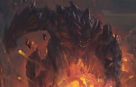

League of legends
Broken champions

5 Broken champions who break your nerv!
5 Malphite

Malphite have been broken this paths and special now because the items he uses will be buff. The R of Malphite is the most broken he can take pentakill if take magic damage, he Q can go all over the map it's a stone that where ever you go it will follow you and make very much magic resist + he got speed and when the stone hitting you, it makes you go slow. And Malphite got buffed to magic resist so now it's gonna more easyer to kill mordekaiser.
4 Master yi

Master Yi have been always broken and with good stategy you 200 years to kill him, his Q make damage and he be invicible you can't go away from this. And the worst when he clcik R it's all done you can't run or fight. He is stronger his R make him go faster, more damage and more attack speed and the worst, when he is low he can heal with his W and more items he and more update his W then more he can heal. He can heal like he half life with only one buttom.
3 Yummi
Yummi is just Yummi it's impossible to kill her. He can go over your body heal you and give you speed, but the best is you go on the body and later you don't have to do something you can go to the toilet, play UNO, chat with your friend or go outside and come back and you still alive. She is so broken not jsut because she on peoples body because she have a R that make every body stand for 3 second but you have to be in this rectangle.
2 Aphelios
Aphelios jsut can't die it's not impossible but you gonna need 200 years to kill, but this this time i can't explain the champion, you gonna need to play 20 rounds to understand just the bacics. But all i know he shoot 4 difrent ways and there is only one weapon he need to get so broken. And it's a weapon that shoot long, longer then the Q of Morgana i don't know how that weapon work but i know it's taking 200 years to kill him and that all i need to know he is so broken.
1 Yasuo